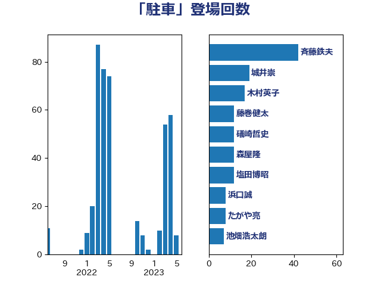

単語「駐車」

| 斉藤鉄夫 | 公明党 | 42 回 |
| 城井崇 | 立憲民主党 | 19 回 |
| 木村英子 | れいわ新選組 | 17 回 |
| 藤巻健太 | 日本維新の会 | 12 回 |
| 礒崎哲史 | 国民民主党 | 12 回 |
| 森屋隆 | 立憲民主党 | 12 回 |
| 塩田博昭 | 公明党 | 12 回 |
| 浜口誠 | 国民民主党 | 8 回 |
| たがや亮 | れいわ新選組 | 8 回 |
| 池畑浩太朗 | 日本維新の会 | 7 回 |
| 東徹 | 日本維新の会 | 7 回 |
| 阿部司 | 日本維新の会 | 6 回 |
| 石井章 | 日本維新の会 | 6 回 |
| 杉田水脈 | 自由民主党 | 6 回 |
| 後藤祐一 | 立憲民主党 | 6 回 |
| 岸田文雄 | 自由民主党 | 6 回 |
| 田村智子 | 日本共産党 | 5 回 |
| 小沢雅仁 | 立憲民主党 | 5 回 |
| 山本剛正 | 日本維新の会 | 4 回 |
| 三宅伸吾 | 自由民主党 | 4 回 |
| 高木かおり | 日本維新の会 | 3 回 |
| 金子俊平 | 自由民主党 | 3 回 |
| 金城泰邦 | 公明党 | 3 回 |
| 漆間譲司 | 日本維新の会 | 3 回 |
| 梅谷守 | 立憲民主党 | 3 回 |
| 日下正喜 | 公明党 | 3 回 |
| 山際大志郎 | 自由民主党 | 3 回 |
| 山本佐知子 | 自由民主党 | 3 回 |
| 中川康洋 | 公明党 | 3 回 |
| 三浦信祐 | 公明党 | 3 回 |
| おおつき紅葉 | 立憲民主党 | 3 回 |
| 金村龍那 | 日本維新の会 | 2 回 |
| 西村康稔 | 自由民主党 | 2 回 |
| 石井苗子 | 日本維新の会 | 2 回 |
| 平山佐知子 | 無所属 | 2 回 |
| 小池晃 | 日本共産党 | 2 回 |
| 高橋千鶴子 | 日本共産党 | 1 回 |
| 鈴木義弘 | 国民民主党 | 1 回 |
| 重徳和彦 | 立憲民主党 | 1 回 |
| 谷川とむ | 自由民主党 | 1 回 |
| 谷公一 | 自由民主党 | 1 回 |
| 自見はなこ | 自由民主党 | 1 回 |
| 米山隆一 | 立憲民主党 | 1 回 |
| 福重隆浩 | 公明党 | 1 回 |
| 神田潤一 | 自由民主党 | 1 回 |
| 石井正弘 | 自由民主党 | 1 回 |
| 田中健 | 国民民主党 | 1 回 |
| 横沢高徳 | 立憲民主党 | 1 回 |
| 森山浩行 | 立憲民主党 | 1 回 |
| 柳ヶ瀬裕文 | 日本維新の会 | 1 回 |
| 松野博一 | 自由民主党 | 1 回 |
| 松村祥史 | 自由民主党 | 1 回 |
| 松本剛明 | 自由民主党 | 1 回 |
| 早坂敦 | 日本維新の会 | 1 回 |
| 岸真紀子 | 立憲民主党 | 1 回 |
| 岡田直樹 | 自由民主党 | 1 回 |
| 山岸一生 | 立憲民主党 | 1 回 |
| 小宮山泰子 | 立憲民主党 | 1 回 |
| 寺田静 | 無所属 | 1 回 |
| 大岡敏孝 | 自由民主党 | 1 回 |
| 吉田統彦 | 立憲民主党 | 1 回 |
| 古川元久 | 国民民主党 | 1 回 |
| 中野英幸 | 自由民主党 | 1 回 |
| 上田英俊 | 自由民主党 | 1 回 |
| 上田清司 | 国民民主党 | 1 回 |